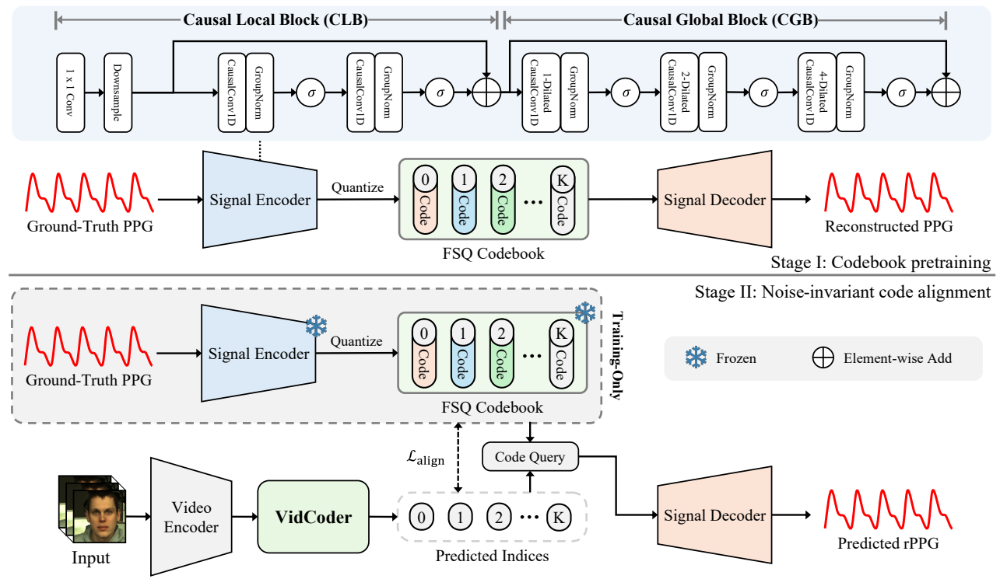
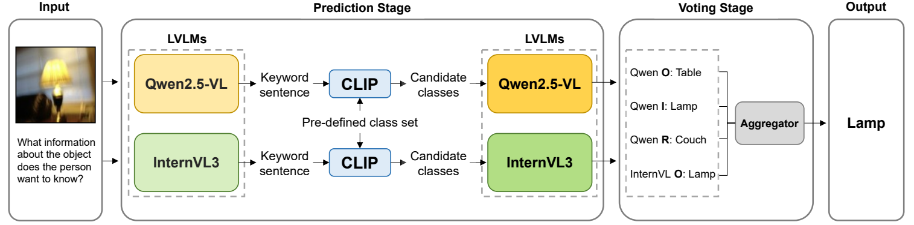
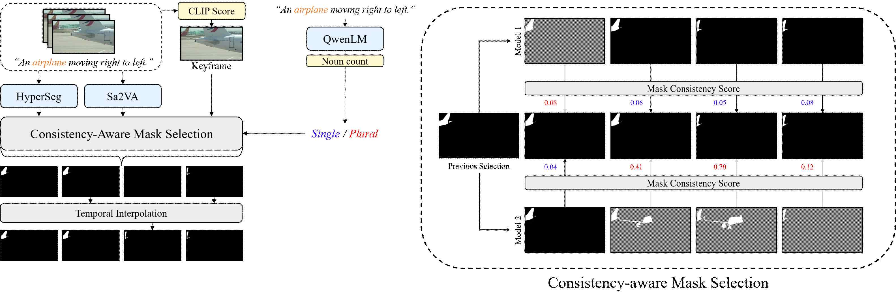
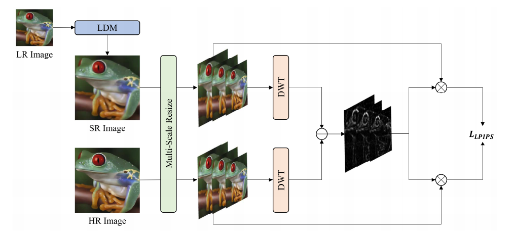
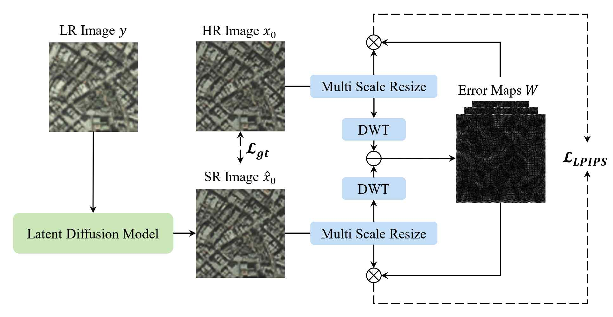
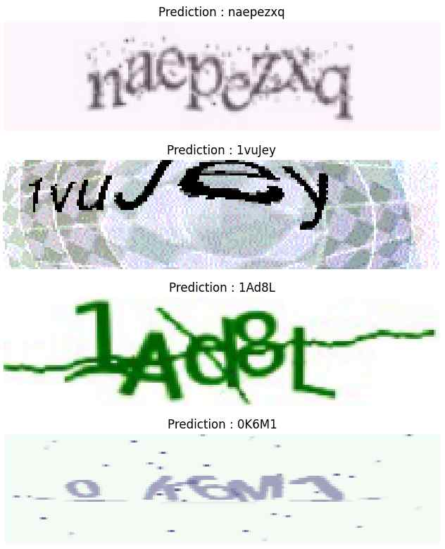
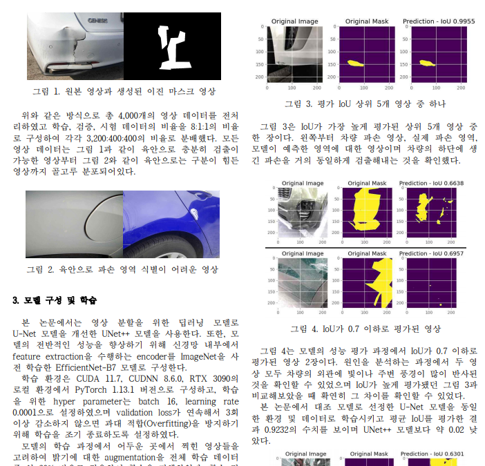
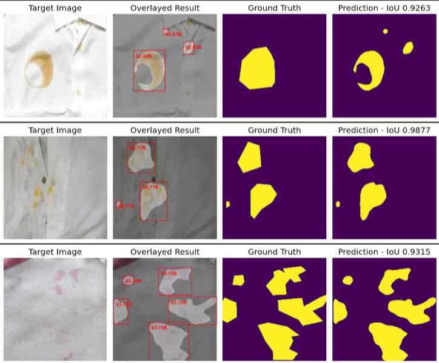
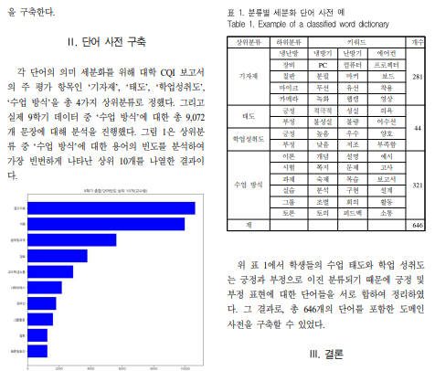

I am a first-year Ph.D. student in the Department of Artificial Intelligence at Kyungpook National University, advised by Prof. Dong-Gyu Lee at the KNU Computer Vision & Machine Intelligence Lab.
Prior to KNU, I received my B.S. degree from the Department of Computer Engineering at Kumoh National Institute of Technology, advised by Prof. Hyeonju Yoon. My research focuses on human-centric AI and computer vision.
🔥 News
- 2026.10: One paper is under review for IEEE Transactions on Circuits and Systems for Video Technology (TCSVT).
- 2026.09: One paper is under review for International Conference on Learning Representations (ICLR).
- 2025.10: Received the Top Prize from the AI Convergence Safety Idea Competition by KNU.
- 2025.09: I was selected as a Full Scholarship Awardee for my Ph.D. program at KNU.
- 2025.09: One paper was presented at Korea Artificial Intelligence Conference (KAIC).
- 2025.08: Received the Encouragement Prize from the AI Hackathon Competition by CNU.
- 2025.07: One paper was presented at IEEE/CVF Conference on Computer Vision and Pattern Recognition Workshops (CVPRw).
- 2025.06: Received the 3rd Place in the VizWiz Zero-Shot Image Classification Grand Challenge at CVPR Workshops 2025.
- 2025.04: One paper was presented at KIISE Transactions on Computing Practices (KTCP).
- 2024.12: Received the Best Presentation Paper Award at Korea Software Congress (KSC).
- 2024.09: Received the Merit Scholarship (IH003) from KNU.
- 2024.06: Received The Mayor of Daegu Metropolitan City Award at the Daegu Public Data Startup Competition.
- 2024.03: Joined Computer Vision and Machine Intelligence Lab. at Kyungpook National University.
- 2024.03: Received the Merit Scholarship (IH003) from KNU.
📝 Publications
* indicates equal contribution. † indicates the corresponding author.
International Publications
Jun-Hyeok Seo, Dong-Gyu Lee†
Conference on Neural Information Processing Systems (NeurIPS), 2026
Under Review

Jun-Hyeok Seo, Da-Hee Kim, Jeong-Cheol Lee, Seungyeon Lee, Sangtae Ahn, Dong-Gyu Lee†
IEEE Journal of Biomedical and Health Informatics (JBHI, IF: 6.7), 2026
Under Review

Multi-Perspective LVLM Prompting for Robust Zero-Shot Image Classification
Wonjun Choi, Jeong-Cheol Lee, Jun-Hyeok Seo, Dong-Gyu Lee†
IEEE/CVF Conference on Computer Vision and Pattern Recognition Workshops (CVPRw), 2025
Domestic Publications

Context-Aware Adaptive Mask Selection for Consistent Referring Video Object Segmentation
Jun-Hyeok Seo, Young-Woo Youn, Wonjun Choi, Dong-Gyu Lee†
Korea Artificial Intelligence Conference (KAIC), 2025

Jun-Hyeok Seo, Dong-Gyu Lee†
KIISE Transactions on Computing Practices (KTCP), 2025

Diffusion Model Based Image Super-Resolution with Multi-Scale High Frequency Error Maps
Jun-Hyeok Seo, Dong-Gyu Lee†
Korea Software Congress (KSC), 2024
🏆 Best Presentation Paper Award

Robust Captcha Image Recognition Algorithm Using Transformer-Based OCR Model
Jun-Hyeok Seo, Seongjin Jang, Minjun Kim, Hyeonju Yoon†
Proceedings of the Korean Institute of Information Technology Conference (KIIT), 2023
🏆 Bronze Award

Deep Learning-Based Vehicle Damage Area Detection System using Semantic Segmentation
Jun-Hyeok Seo, Hyeonju Yoon†
Korea Computer Congress (KCC), 2023

Segmentation of Stain Area in Clothing Images using UNet++
Jun-Hyeok Seo, Gunwook Kim, Junsu Park, Sungyoung Kim†
Proceedings of the Korean Institute of Information Technology Conference (KIIT), 2023
🏆 Bronze Award

Domain Dictionary Construction for Automatic Analysis of Subject CQI Reports
Gunwoo Kim, Junsu Park, Jun-Hyeok Seo, Yuchul Jung, Hyeonju Yoon†
Proceedings of the Korean Institute of Information Technology Conference (KIIT), 2022
🏆 Silver Award

Deep Learning-Based Vehicle Model and License Plate Identification System using Vehicle Image
Jun-Hyeok Seo, Hyeonju Yoon†
Proceedings of the Korean Institute of Information Technology Conference (KIIT), 2022
🏆 Gold Award
🎖 Honors and Awards
Awards
- 2025 Top Prize, AI Convergence Safety Idea Competition by KNU
- 2025 3rd Place Winner, VizWiz Zero-Shot Image Classification Grand Challenge in CVPR 2025
- 2025 Encouragement Prize, AI Hackathon Competition by CNU
- 2024 The Mayor of Daegu Metropolitan City Award, Daegu Public Data Startup Competition
- 2024 Best Presentation Paper Award, Korea Software Congress
- 2023 Bronze Award for Outstanding Paper, Proceedings of KIIT Conference
- 2023 Bronze Award for Outstanding Paper, Proceedings of KIIT Conference
- 2022 Silver Award for Outstanding Paper, Proceedings of KIIT Conference
- 2022 Gold Award for Outstanding Paper, Proceedings of KIIT Conference
Scholarships
- 2025-2 Doctoral Program Full Scholarship from KNU
- 2024-2 Merit Scholarship (IH003) from KNU
- 2024-1 Merit Scholarship (IH003) from KNU
📖 Education
- 2024.03 - Present, Integrated M.S.-Ph.D. in Artificial Intelligence, Kyungpook National University, Daegu, Korea
- 2024.03 - Present, Integrated M.S.-Ph.D. in AI Safety Convergence (Minor), Kyungpook National University, Daegu, Korea
- 2020.03 - 2024.02, B.S. in Computer Engineering, Kumoh National Institute of Technology, Gumi, Korea
💻 Experience
- 2025.07 - 2025.12, Technology Transfer, Happyaging, Daegu, Korea
- 2025.03 - 2025.07, Undergraduate Tutor, Kyungpook National University, Daegu, Korea
- 2022.07 - 2022.09, Education Completion, LG Aimers, Online
- 2022.07 - 2022.09, Web Publishing Team, TimeComs, Gumi, Korea
- 2021.07 - 2021.09, Facilities Management Department - Data Processing, WONIK QnC, Gumi, Korea
- 2021.03 - 2022.02, Freshmen Mentor, Kumoh National Institute of Technology, Gumi, Korea
📚 Teaching
- 2025-1 Teaching Assistant, Data Analysis (CAIB226), Undergraduate
- 2024-2 Teaching Assistant, Problem-Solving Skills and Algorithms (CAIB0230), Undergraduate